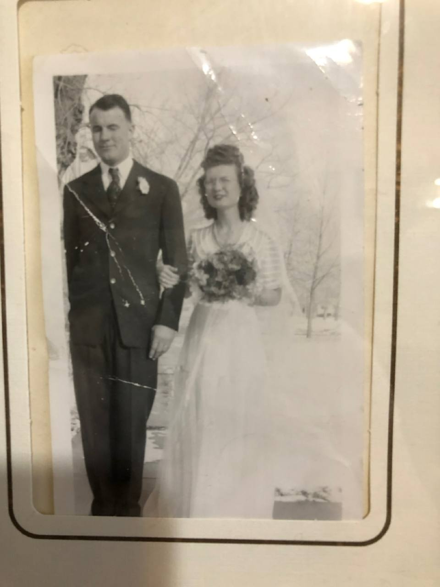
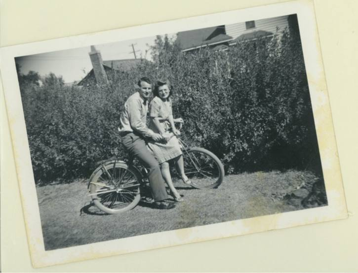
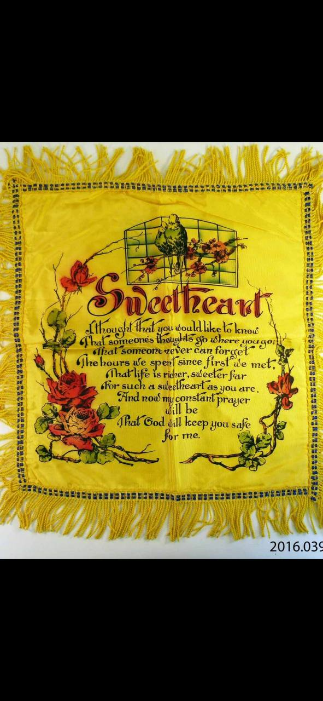
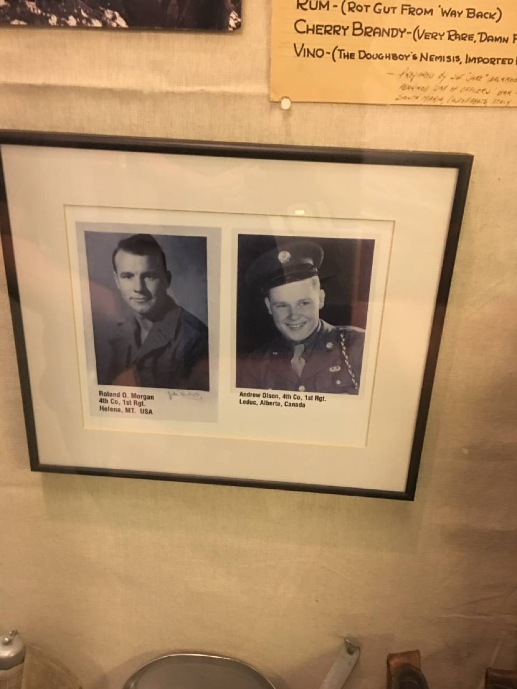
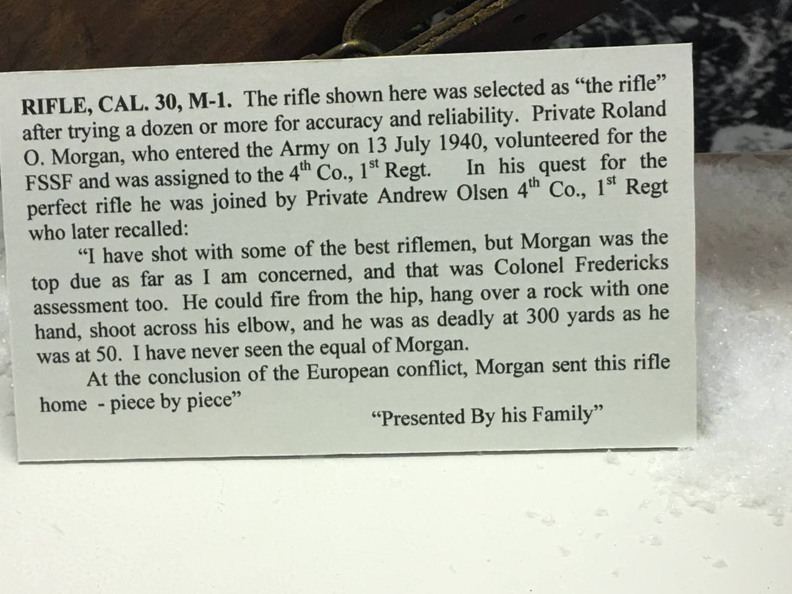
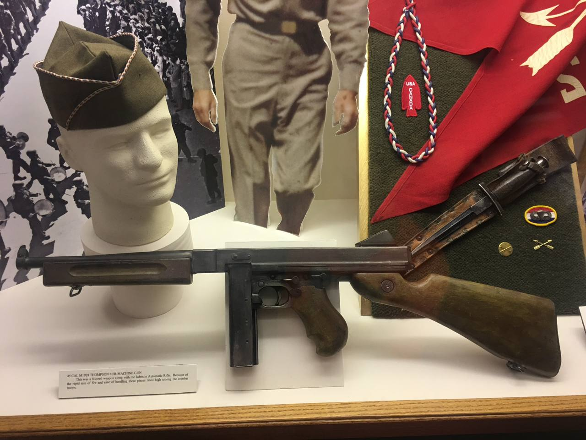
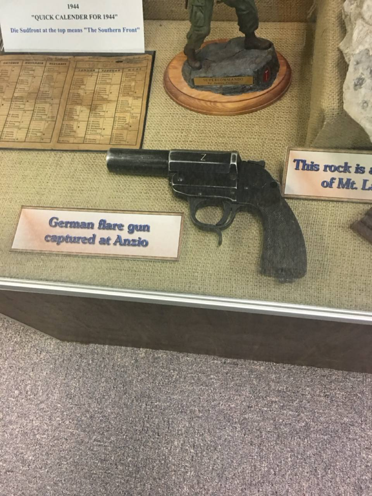
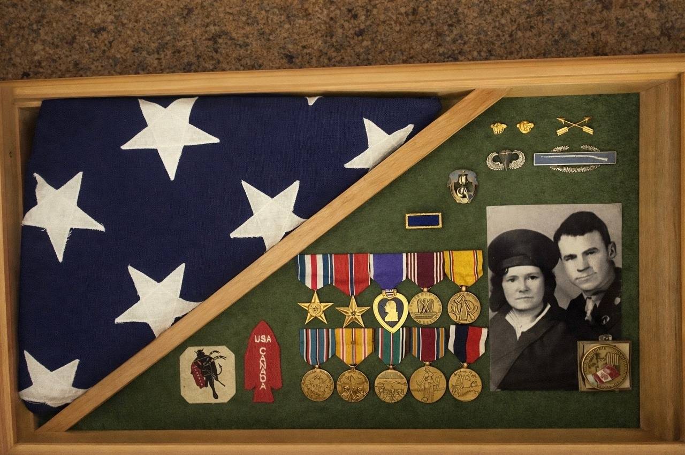
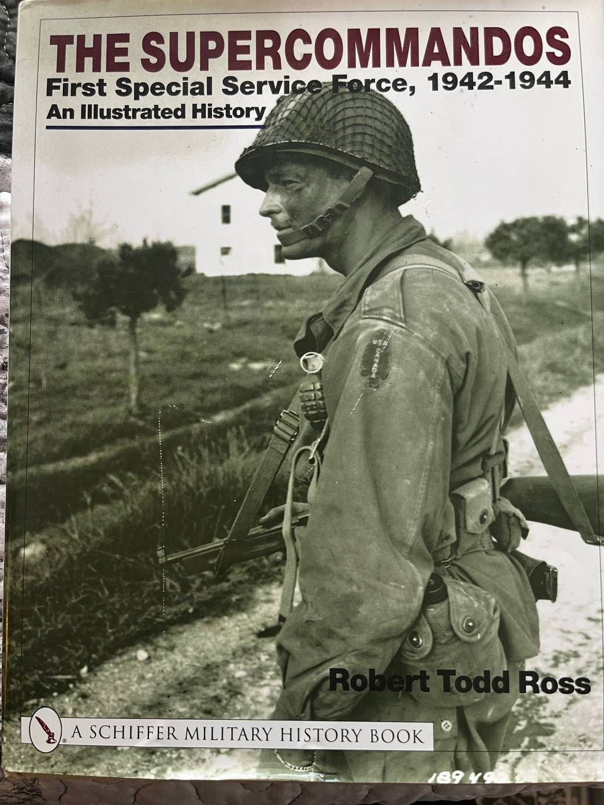

A Plan Born of Desperation
In early 1942, the Allies were losing the war. Nazi Germany controlled most of Europe,
and their war machine ran on one crucial resource: hydroelectric power from Norway.
A British journalist and inventor named Geoffrey Pyke proposed something audacious:
drop elite commandos by parachute onto Norway's glaciers. From there, they would use special
snow vehicles to raid Nazi-controlled power plants, crippling Germany's ability to produce
heavy water for atomic research and aluminum for aircraft.
Churchill loved the idea. He called it "Project Plough."
Never in the history of human conflict will so few immobilize so many.
— Winston Churchill, on Project Plough
The mission required a new kind of soldier — men who could ski, parachute, climb mountains,
survive arctic conditions, and fight behind enemy lines. America and Canada agreed to form a
joint unit — the first of its kind — to carry out this impossible mission.
The Norway raid was eventually cancelled, but the unit remained.
They would find other impossible missions soon enough.
Roland's Story
One of those young men was Roland Oroville Morgan —
a soldier in the 4th Company, 1st Regiment of the First Special Service Force.
Roland enlisted on July 13, 1940 — more than a year before
Pearl Harbor — and served until July 29, 1945.
A young man from Oklahoma who answered his country's call before most Americans
knew war was coming — and left behind someone he loved.
📍 From Oklahoma
🪂 Paratrooper Qualified
💜 Purple Heart
⭐ Silver Star
🎖️ Good Conduct Medal
🏅 Distinguished Unit Badge
🎗️ 2 Bronze Service Stars
🌍 EAME Service Ribbon
🏔️ Aleutian Islands Campaign
⚔️ Central Europe Campaign
🇫🇷 Southern France Campaign
🇮🇹 Naples-Foggia Campaign
🦅 501st Airborne Presidential Citation
🏆 Congressional Gold Medal (2015)

Roland and Georgiana on their wedding day. After surviving the war,
Roland came home to marry his sweetheart.

Roland and his sweetheart, Georgiana — after the war.
They would marry and have six children together.

A "sweetheart poem" Roland sent home to Georgiana from overseas —
a common way soldiers let loved ones know they were thinking of them.
Sweetheart
I thought that you would like to know
That someone's thoughts go where you go;
That someone never can forget
The hours we spent since first we met.
That life is richer, sweeter far
For such a sweetheart as you are.
And now my constant prayer will be
That God will keep you safe for me.
— From Roland to Georgiana, sent from overseas

Roland O. Morgan (Helena, MT, USA) and
Andrew Olsen (Leduc, Alberta, Canada) —
best friends serving together in 4th Company, 1st Regiment. An American and a Canadian, brothers in arms.
Montana Military Museum

Museum placard describing Roland's M-1 Garand rifle — selected after testing "a dozen or more for accuracy and reliability."
Montana Military Museum
I have shot with some of the best riflemen, but Morgan was the top due as far as I am concerned,
and that was Colonel Frederick's assessment too. He could fire from the hip, hang over a rock with one hand,
shoot across his elbow, and he was as deadly at 300 yards as he was at 50.
I have never seen the equal of Morgan.
— Private Andrew Olsen, Roland's best friend and fellow Forceman
At the conclusion of the European conflict, Roland sent his prized M-1 rifle home — piece by piece.
Today, it is displayed at the Montana Military Museum, presented by his family.
Museum Artifacts

Roland's .45 Cal M1928 Thompson submachine gun on display at the Montana Military Museum,
alongside the iconic FSSF red arrowhead patch and V-42 stiletto knife.
Montana Military Museum

German flare gun captured by Roland from a Nazi Captain at Anzio.
The display also shows a 1944 German calendar marked "Die Sudfront" (The Southern Front).
Montana Military Museum

Roland's medals and service memorabilia, assembled by his granddaughter Amy.
The photo shows Roland with his mother before deployment — a sad goodbye neither would forget.
What these medals tell us:
The Purple Heart means Roland was wounded in combat.
The Silver Star is awarded for gallantry in action against an enemy.
The Distinguished Unit Badge recognizes extraordinary heroism in action as a unit.
The Presidential Unit Citation from the 501st Parachute Infantry Regiment, 101st Airborne Division, honors exceptional service in later combat.
His campaign ribbons — Central Europe, Southern France, Aleutian Islands, and Naples-Foggia —
trace his path across the war's most demanding theaters.
In 2015, Congress awarded members of the 1st Special Service Force the Congressional Gold Medal.
Roland didn't just serve. He fought. He bled. He survived.
After the war, Roland came home to Georgiana. They married and settled in Montana —
Georgiana's hometown, and near Fort Harrison where he'd trained with the Force.
Together they raised six children, including Jeannette, Dean's grandma. Roland's story didn't end in the war.
It continued in the family he built.
Legacy
In 2015, surviving members of the First Special Service Force —
most in their 90s — received the Congressional Gold Medal,
the highest civilian honor in the United States.
For many, it came 70 years late. For some, it came after they had already passed.
The Force is recognized as the ancestor of modern Special Forces —
the Green Berets, the Canadian Special Operations Regiment.
But the men who served weren't thinking about legacy.
They were thinking about survival, and about getting home.
Remember
The men of the First Special Service Force were not superheroes.
They were human beings — scared, exhausted, far from home —
who did what was asked of them at terrible cost.
They didn't see themselves as heroes.
They just wanted to survive — and be remembered.
This is for Roland Morgan, and for all the men of the Force —
the ones who came home, and the ones who didn't.

"The Supercommandos: First Special Service Force, 1942-1944"
by Robert Todd Ross